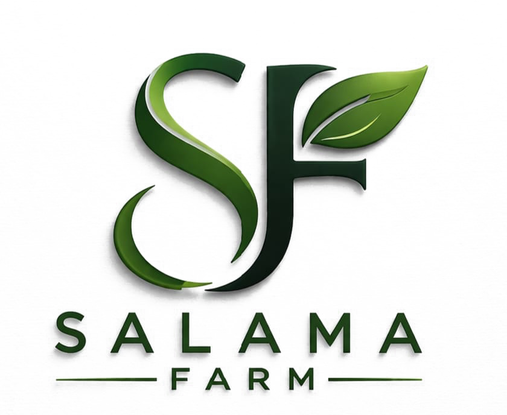

Innovate Africa Challenge 2026
SalamaFarm Video Pitch
Edge-AI foliar crop disease diagnostics and solar-powered acoustic IoT scarecrow nodes protecting smallholder farming communities.
Deployment Highlights
Currently validated across 3,000+ acres in the Ahero and Lower Kuja Irrigation Schemes in partnership with the National Irrigation Authority (NIA), eliminating pre-harvest Quelea bird destruction and reducing toxic chemical dependence.
Learn more at www.salamafarm.com · Contact: info@salamafarm.com